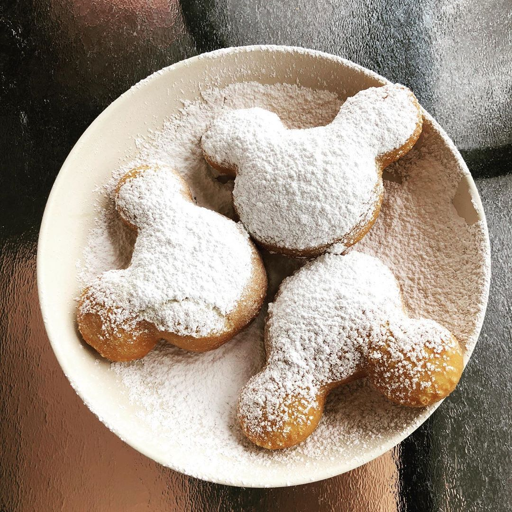

my pumpkin beignets recipe!

ingredients
- 3/4 cup warm water
- 1 tsp active dry yeast
- 1/4 cup white sugar
- 1/2 tsp salt
- 1 egg whisked
- 1/4 cup pumpkin puree
- 2 tbsp butter, softened
- 1/2 cup thickened/heavy cream
- 3 1/4 cups plain flour
- 1-2 litres Oil for frying (vegetable)
- 3/4 cup icing/powdered sugar
- 3 tbsp pumpkin pie spice
description
these are yummy beignets shaped to look like mickeys face, heres how to bake them :)
- Add warm water and yeast to a small bowl, stir and leave for 5 minutes.
- Combine sugar, salt, spice, egg, pumpkin, butter and cream into a large bowl and mix. then pour in yeast
water and mix again
- Add flour, and knead using the dough hook on a stand mixer or knead with your hands until the dough is
smooth and combined, it should still be quite sticky.
- Place dough into a large greased bowl and cover with plastic wrap. Leave in a warm place to double in size,
about 2 hours.
- roll out dough till 1cm thick and use a cut out to make the mickey shapess or you can simply cut
into squares
- Pour frying oil into a deep sided heavy pot until it is about as deep as your index finger. Heat the
oil on medium, making sure to use a thermometer. The oil needs to reach close to 175c/350f.
- Fry the dough in batches for about 1 minute on each side, or until a golden brown colour is reached.
Remove carefully using a slotted spoon and place on a paper towel lined plate.
- to serve, sift icing sugar and pumpkin pie spices together and dust generously on top of beignets. Enjoy
fresh while hot and crispy. Yum!